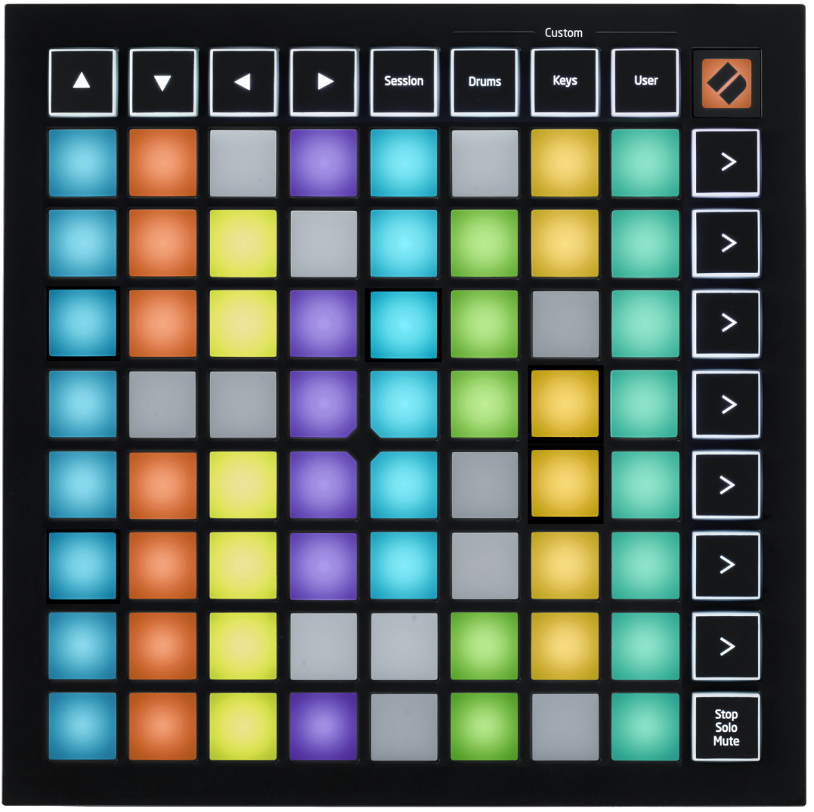

FFXIV Plugins
I currently maintain two silly little plugins for Final Fantasy XIV.
We'll start with the simple one. NICEDamage is a stupid, half-day joke project I made to get to grips with FFXIV modding. Final Fantasy XIV has damage numbers displayed on screen for all attacks, from and to the player. Each of these numbers can have an additional caption if they're affected a debuff or something, e.g. sometimes on icnoming damage you'll see 5836! (15% Parried). NICEDamage utilises this caption such that if a damage number ends in 69, the caption reads NICE! That's it. It has over ten thousand downloads.
Ok, this one's a bit more complex. For another, previous project, I bought a Launchpad Mini, a MIDI input device with RGB lighting on each key. It looks like this.
I got a little bit bored one weekend and decided to map this fun device to Final Fantasy XIV's hotbars. It actually maps pretty well - I put some different colour mapping in such that cooldowns for the actions are demonstrated by the colour on the button - and there's extra colours for when an action is combo'd from another one. It's really cool, and I'm really happy with it! It's fully mappable and should in-theory work with other models of the launchpad.